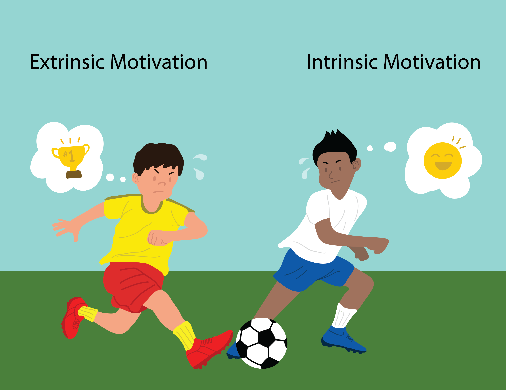
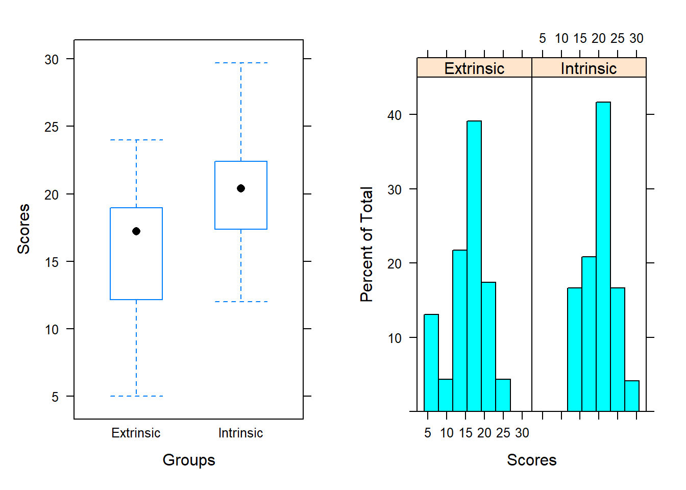

2 Case study 2
2.1 Case study on motivation: Does it arise from outside or inside an individual?
Reward systems are utilized in schools and the workplace, but are rewards operating in the opposite way from what is intended? Do external incentives promote creativity? To address this, researchers investigated whether people would tend to display more creativity when they are thinking about intrinsic or extrinsic motivations Ramsey and Schafer (2013). In this study, undergraduate students of similar creative writing experience were randomly assigned to one of two groups . One group received intrinsic questionnaires, and the other received extrinsic questionnaires.
The intent of this treatment (the questionnaires) was to have student establish a thought pattern concerning a type of motivation (intrinsic – doing something because it is rewarding or enjoyable; extrinsic – doing something because we want to earn a reward or avoid punishment). Researchers speculated that those who were thinking about intrinsic motivations would display more creativity than subjects who were thinking about extrinsic motivations. All subjects were instructed to write a Haiku, and those poems were evaluated for creativity by a panel of judges
The resulting experimental data is shown below, displaying the creativity score (Score) and the type of questionnaires (Treatment) assigned for a given undergraduate. Do the data provide evidence that creativity scores are affected by type of motivation?
Summary of findings
Numerical and graphical summaries of the creativity scores for each motivation type are provided below.

| Treatment | Mean | SD |
|---|---|---|
| Extrinsic | 15.74 | 5.25 |
| Intrinsic | 19.88 | 4.44 |
The creativity scores tended to be lower for the students in the extrinsic group (-4.14 difference in sample means), with both groups showing similar variability in scores. Are the scores between the two groups different enough to convince you that those thinking about intrinsic motivations display more creativity than subjects that were thinking about extrinsic motivations? If not, how much larger should the mean be? Answers to such questions require inferential methods that will be discussed in a future chapter.
For now, be aware that the data provides convincing evidence that subjects thinking about intrinsic motivations would receive a higher creativity scores than those thinking about extrinsic motivation (two-sided p-value = .006). The 95% confidence interval of (-7.010, -1.277) shows that the mean creativity score for the extrinsic group is expected to be between 1.277 and 7.010 lower than the mean creativity score for the intrinsic group.
Scope of inference
We may conclude that the differences in creativity scores between groups was caused by motivation questionnaire type since the treatment (motivation questionnaire type) was randomly assigned to the undergraduates. We may only infer this for the subjects in the study and not a larger population since the students were not randomly selected from a population.
Amabile, Teresa M. 1985. “Motivation and Creativity: Effects of Motivational Orientation on Creative Writers.” Journal of Personality and Social Psychology 48 (2): 393–99. https://doi.org/10.1037/0022-3514.48.2.393.
Ramsey, F. L., and D. W. Schafer. 2013. “The Statistical Sleuth: A Course in Methods of Data Analysis.” Cengage Learning 30 (4): 413–14. https://doi.org/10.1080/00224065.1998.11979882.